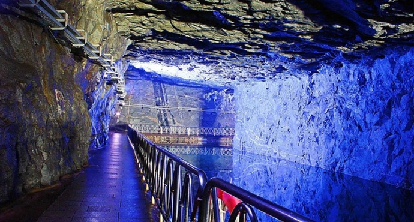

金門島

基本資料
座標：24.45°N 118.37°E
土地大小：151.65平方公里
隸屬縣市：金門縣
島嶼簡介
金門自古屬福建泉州府同安縣所轄，民國四年始創縣治。金門一地在同安縣的歷史有著重要地位，有「無金不成銀」、「無金不成銅」的俗諺。
特產
金門高粱酒
貢糖
砲彈鋼刀
金門麵線
金門一條根
牛肉乾
景點
翟山坑道
清金門鎮總兵署
莒光樓
金門民俗文化村
古寧頭戰史館
新聞
金烈之星啟用 金門觀光升級
金門小三通逾175萬人次創新高
首頁
台灣附屬島嶼
彭佳嶼
龜山島
琉球嶼（小琉球）
蘭嶼
小蘭嶼
綠島
澎湖群島
澎湖本島(大山嶼)
西嶼
白沙島(北沙)
七美嶼(大嶼)
望安島(八罩島)
吉貝嶼(嘉簸嶼)
虎井嶼
東吉嶼
將軍澳嶼
中屯島
花嶼
金門
金門島
小金門
馬祖列嶼
南竿島
北竿島
東引島
東莒島
西莒島
高登島
西引島
南海諸島
東沙環礁
太平島
中洲島
小測驗